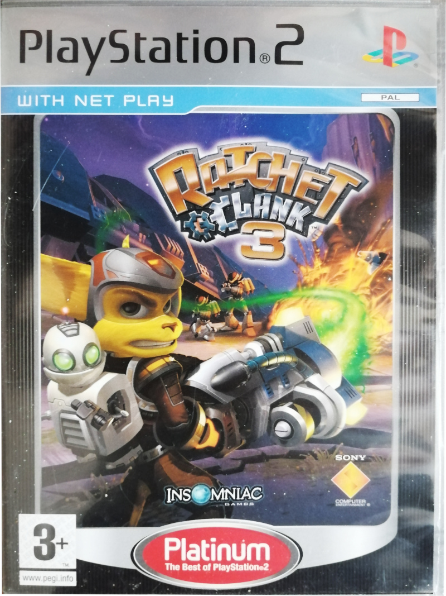
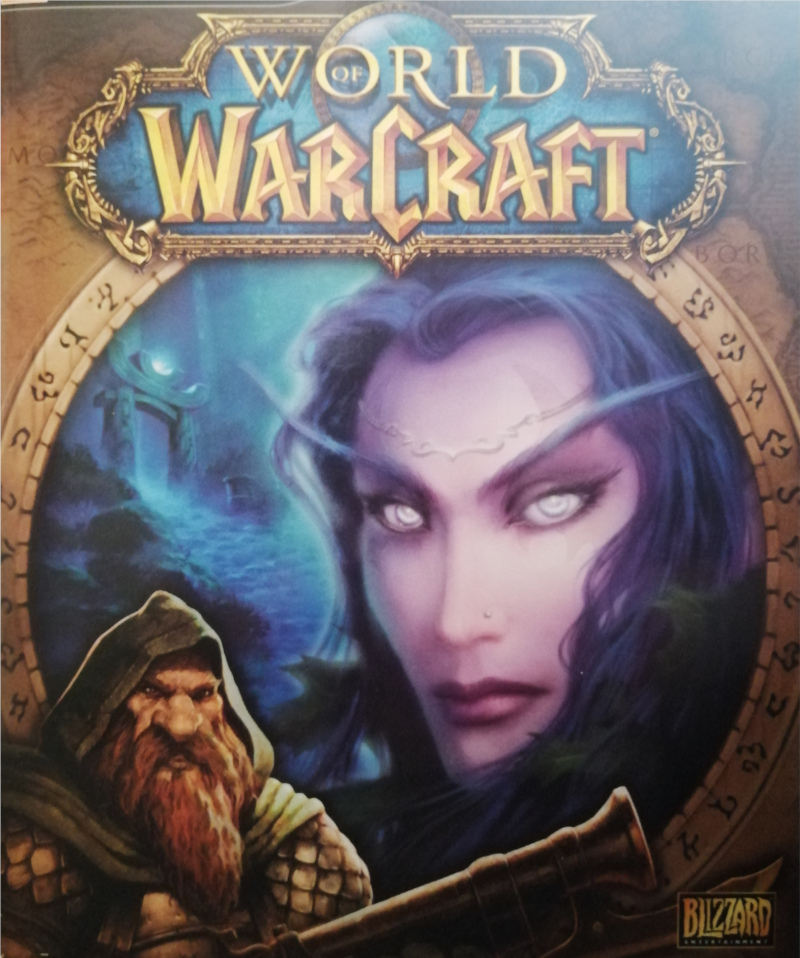

Sly2&3: my favorite childhood games. I occasionally go back to these.

I played this game through multiple times as a kid.

I played WoW for a long time (since around 2011) but recently quit it after it required so much time to
stay on top of. (Plus, it is a subscription type of a game.)